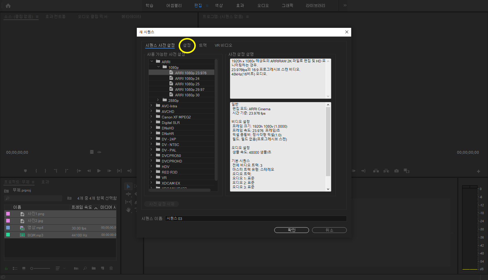
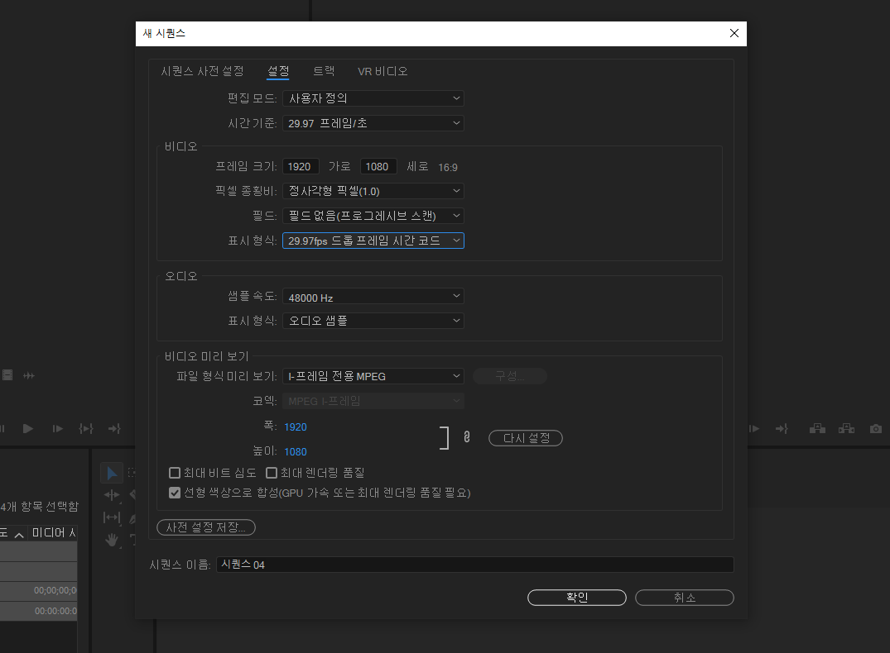
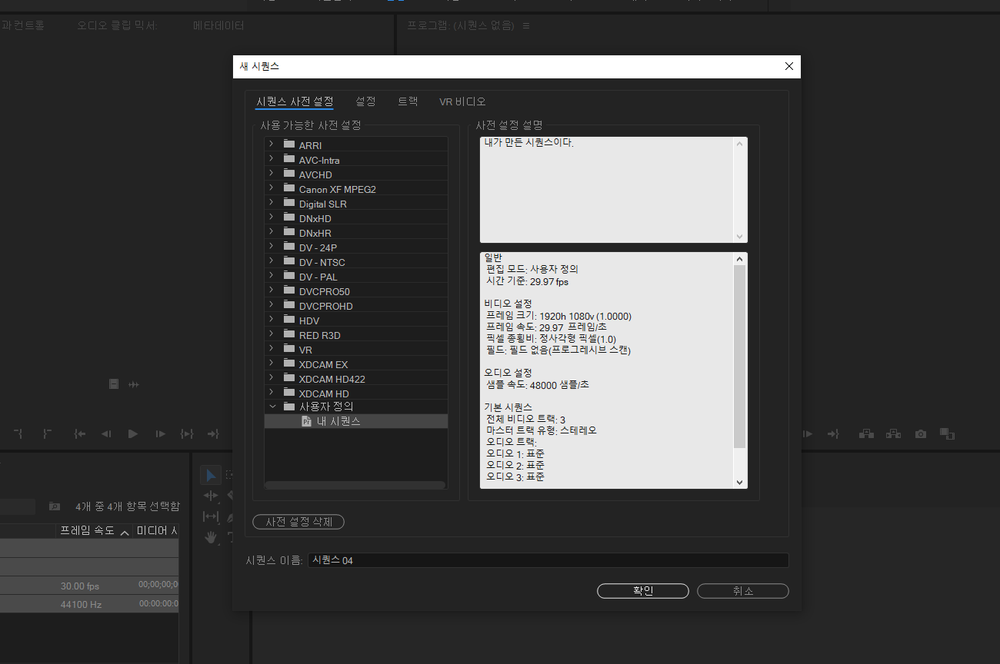

준비 단계
"준비 단계" 에서는 영상작업을 시작하기 전
재료들을 세팅하는 법을 배워 볼 것 입니다.
먼저 영상 편집을 하기 위해선 당연히 영상이 필요합니다.
그리고 영상 외에도 사진, 음악 등이 함께 필요한 경우가 많습니다.
저는 위 사진과 같이 필요한 영상, 사진, 음악을 폴더에 모아 놓았습니다.
그 다음 재료들을 모두 좌측 하단에 있는 프로젝트 창으로 옮깁니다.
재료들이 모두 문제없이 들어왔다면 성공입니다.
그 다음은 시퀀스를 만들 차례입니다.
시퀀스는 쉽게 말해 편집을 하기 위한 "도화지" 라고 생각하시면
됩니다.
도화지가 좋은 도화지여야 더 좋은 그림을 그릴 수 있겠죠?
시퀀스를 만들기 위해
프로젝트 창 하단 사진에 표시된 저 아이콘을 클릭해줍니다.
그 다음 맨 위의 "시퀀스"를 클릭해줍니다.

이러한 창이 뜰 것 입니다.
두번째에 "설정"을 클릭해줍니다.
설정 창에서 여러분이 바꿔줄 것은 사진에 보이는 것처럼 총 5가지 입니다
사진에 보이는 대로 설정을 바꿔줍니다.
그런데, 여기서 '29.97 프레임/초' 에 프레임 크기가 1920x1080 (16:9)로
되어 있는데
이것은 여러분들이 흔히 보는 유튜브의 FHD영상을 기준으로 세팅을 한
것이고,
만약 여러분들의 영상이 이보다 화질이 더 좋거나, 더 안 좋다면 그에 맞는
설정으로 바꿔주셔야 합니다.
저는 일단 이렇게 시퀀스 설정을 해보겠습니다.
이제 이 설정을 다음 번에 편집할 때도 똑같이 사용할 수 있도록 "사전
설정 저장"을 눌러줍니다.
이름과 설명을 원하는 대로 적어주시고, 확인을 눌러줍니다.

보시는 바와 같이 여러분이 설정한 시퀀스가 저장되어있는 것을 확인할 수
있습니다.
새로 만든 시퀀스를 클릭하고 확인을 눌러줍니다.
무엇인가가 생겨나지 않았나요?
바로 저 곳이 여러분들이 편집을 할 시퀀스이며, 도화지입니다.
시퀀스를 만들었으니 이제 모든 준비는 끝났습니다.